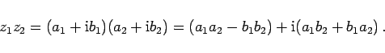
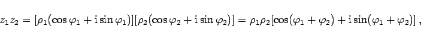
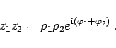
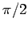

Die Multiplikation zweier komplexer Zahlen z1 und z2 in der algebraischen Schreibweise ist definiert durch die Formel
|  | (1.139a) |
In der trigonometrischen Schreibweise gilt
|  | (1.139b) |
d.h., der Betrag des Produkts ist gleich dem Produkt der Beträge der Faktoren, während das Argument des Produkts gleich der Summe der Argumente der Faktoren ist.
In der Exponentialform erhält man
|  | (1.139c) |
In der geometrischen Interpretation wird der Produktvektor, der das Produkt von z1 und z2 darstellt, durch Drehung des Vektors z1 im entgegengesetzten Uhrzeigersinn um den Winkel, der dem Argument von z2 entspricht, gedreht und durch Multiplikation dieses Vektors mit dem Faktor |z2| gestreckt. Das Produkt z1z2 kann auch durch Konstruktion eines ähnlichen Dreiecks gewonnen werden.
Dabei ist zu berücksichtigen, daß die Multiplikation einer komplexen Zahl z mit i eine Drehung ihres Vektors um den Winkel  bedeutet, während der Modul konstant bleibt.